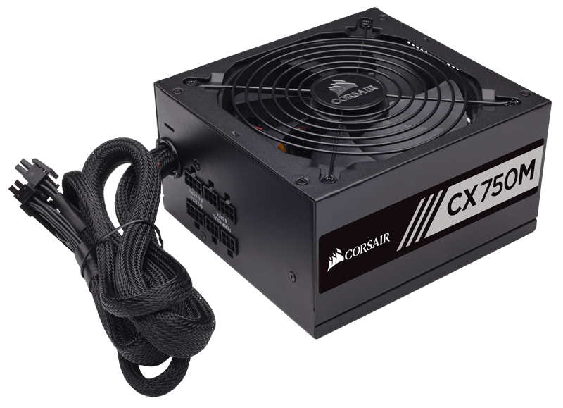
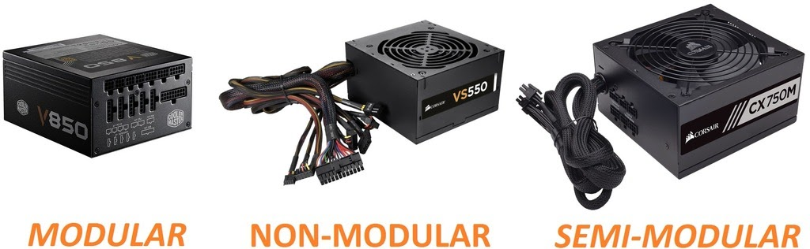
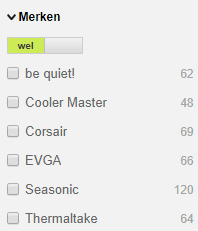

Voeding kiezen
Kenmerken
De voeding, of PSU (Power Supply Unit), is het hart van de computer, het zorgt ervoor dat alles stroom heeft, en omdat er zo veel stroom doorheen loopt wil je wel zeker zijn dat je het juiste kiest. Bij voedingen moet je daarom kijken naar de 80 Plus certificering, dit laat zien hoe veilig de voeding is. Je kijkt ook nog naar watt, want dat laat zien hoeveel de voeding kan leveren, dus houd er ook rekening mee dat je computer genoeg watt krijgt geleverd.
Filters
Als eerste zou ik minimaal een 80 Plus Bronze certificering instellen, en dan daarna het minimale aantal watt dat je nodig hebt, als je geen zin hebt om dit allemaal uit te rekenen: voor Desktop heb je meestal maar 350 watt nodig, en voor Gaming en Workstation meestal minimaal 450, maar dit hangt af van je componenten. Dan moet je nog kijken of je Voeding modulair is, je hebt drie opties: modulair, semi-modulair of niet modulair. Modulair is het duurste, maar dat betekent dat er outputs zitten bij de voeding en je dus alleen de kabel die je nodig hebt hoeft aan te sluiten, dit is vooral voor mensen die ook een mooie computer willen. Semi-modulair betekent dat je een paar kabels vast hebt zitten aan de voeding en een paar optioneel, dit is goedkoper dat modulair. En als laatste heb je dan nog niet modulair, je raad het vast al, hier zitten alle kabels vast, dat is misschien niet zo mooi, maar spaart je wel veel geld. Stel hiervan ook in wat jij nodig denkt te hebben.
Merken
Bij voeding is het belangrijk dat je een betrouwbaar merk neemt, dus ik raad aan te kiezen uit: Corsair, Cooler Master, be quite!, EVGA, Seasonic of Thermaltake. Dit is gewoon omdat het belangrijk is dat je het juiste soort voeding kiest dat ook van een veilig en erkend merk is.
Dit was Stap 6 van Deel 1, je kunt nu doorgaan naar de volgende stap.